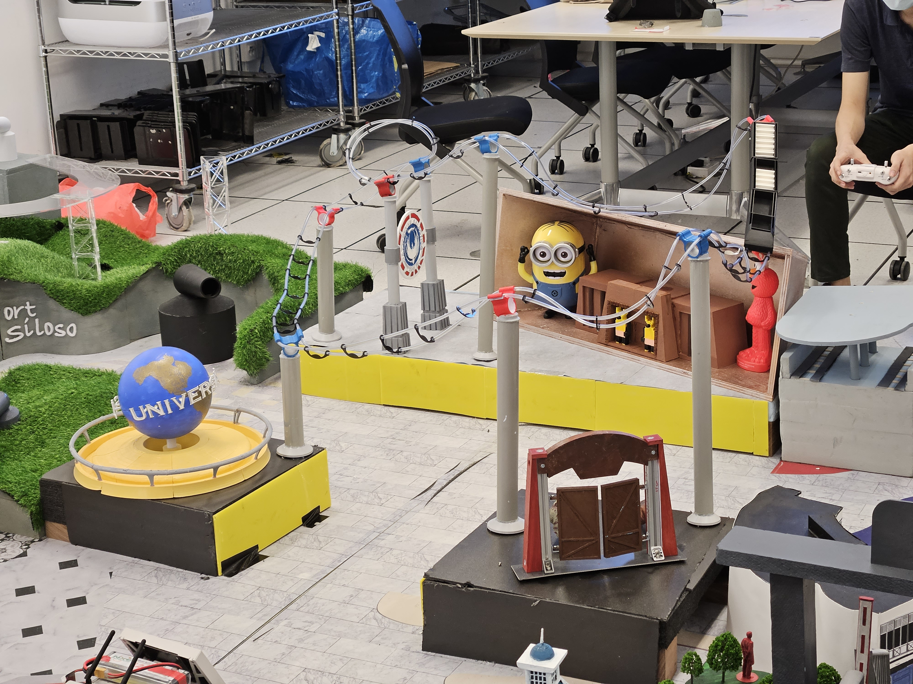
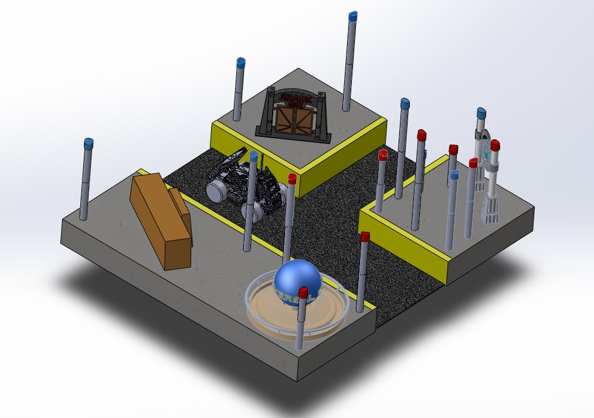

Systems Engineering Project 1 (SEP1)
Learning Objectives
To design and setup physical environment where AgileX LIMO’s functionalities can be realised using Robot Operating System (ROS) Framework
- Obstacle avoidance
- Path planning
- Localisation and mapping
- Navigation
Learning Outcomes
- Fabricated a landmark of Singapore and designed a maze-solving algorithm with the use of ROS Framework that can be implemented on LIMO.
- Used SOLIDWORKS to model 3D CAD drawings of Universal Studios Singapore (USS) landmarks.
- Built foundational ROS framework and self-taught Python; demonstrated proficiency by navigating LIMO robot through fabricated landmarks with obstacle avoidance.
Here is a demonstration of the LIMO successfully completing the maze through path planning with obstacle avoidance.
Fabrication of USS landmarks

